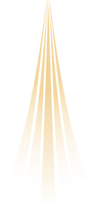

頻率，是一個人在感知、決策、互動與創造上的穩定運作模式。
看懂自己的模式，你就知道怎麼使用自己。
這個時代正在大量產生一種人：
問題不在他們身上——是現有的語言與框架裝不下他們的運作方式。
所以我們造了一套新的語言。
他們常被稱為高敏感族群，被說「想太多」，在職場與關係裡用連自己都不理解的方式慢慢耗損。
語根（Root Code）是描述內在運作模式的最小單位。它回答一個問題：你在工作、關係、壓力、創造中，最自然啟動的是哪一種功能？
12 種內在運作模式。主語根是你最自然的啟動方式，副語根是你的第二引擎——兩者的組合才是完整的你。
在人群中，你會不自覺走向的位置。六種內在原型，描述你與世界互動時的自然姿態。
八種內在動力，回答「什麼事情推得動你」——語根給你方法，動力給你燃料。
它不是人格標籤，是操作說明書：不告訴你「你是什麼人」，而是告訴你「你怎麼用自己最順」。
測驗 → 解讀 → 應用
從一份免費測驗開始，拿到描述自己的語言；再透過覺察表、文章與活動，把「知道」變成「會用」。
三大測驗永遠免費。測完立刻拿到你的主語根與角色卡，可以分享，也可以往下深入。
已累積 4,039 筆測驗數據（含 10 月起的新版測驗，即時更新），系統持續朝量化驗證的路線前進——我們把它當工具開發，不當教條供奉。
覺察表、深度解讀、實體聚會與社群——讓這套語言進到你的日常，而不是停在測驗結果頁。
三個測驗各回答一個問題。建議一次做完三關，約 13 分鐘。
也可以單獨做其中一個：
找出你的主語根——12 種內在運作模式中，你最自然啟動的那一種。這是認識自己的起點。
開始測驗 →六種內在原型，十個問題——看見你在人群中自然成為的角色。
開始測驗 →語根回答「你怎麼運作」，內在動力回答「你為什麼願意做、怎麼被推動」。
開始測驗 →三個測驗都做完，你會得到一組屬於自己的組合。同樣的主語根，也可能走在完全不同的路上。
所有測驗皆為教育與自我認知工具，不具醫療或心理診斷性質。
「感覺很奇妙，這種被看見、被理解和接住的感覺，一直是我所嚮往的。感覺很安心，謝謝創作的人和團隊。」
「你不能真的知道我，除了我自己。你不能代替我告訴我我是誰，除了我自己。謝謝你提供路徑。」
「12 語根歌曲有著不同的旋律、曲風，使我有不同的感受和畫面，加上 Molly 寫的詞和故事所呈現的意境，真的非常美，令我印象深刻。」
每個語根都有自己的特質、穩定與失衡時的樣子，以及代表顏色。點進去看看哪一個像你。
點一下語根，看一句話
兩首屬於頻率文明的歌：2025 年的召喚，與 2026 年的啟程。
頻率文明的測驗與基礎資源永遠免費。如果這套系統幫到了你，你的支持會讓它走到更多人面前。
用一杯咖啡的方式支持系統的持續開發與驗證。
以能力與時間參與——設計、寫作、活動、技術，都是這個系統需要的。
品牌、組織或空間想把這套自我認知工具帶進你的場域？寫信給我們聊聊。